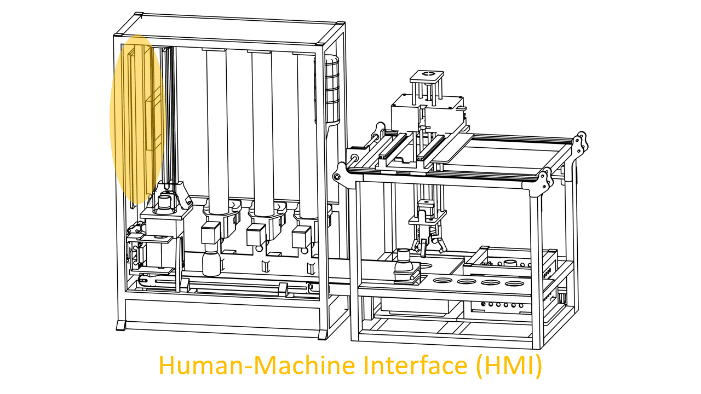

Machine Learning in der Produktion
An der Learning Factory entstehen aus Sensoren und Prozessschritten laufend Daten. Machine Learning nutzt diese Daten für Vorhersagen, die sich mit fester Handprogrammierung kaum erreichen lassen.
Konkret in den nächsten beiden Abschnitten:
- Regression (12.3): das Endgewicht einer Flasche vorhersagen.
- Klassifikation (12.4): defekte Flaschen erkennen.
Die Datengrundlage dafür haben Sie in 12.1.2 selbst gesammelt.

Was ist Machine Learning?
- Klassische Programmierung: ein Mensch schreibt jede Regel von Hand (wenn Füllstand über X, dann ...).
- Machine Learning: das Modell bekommt viele Beispiele und leitet die Regel selbst aus den Daten ab.
Genau das brauchen wir hier: Wie Füllstand, Vibration und Temperatur zusammen das Endgewicht bestimmen, lässt sich kaum in feste Regeln fassen. Ein Modell, das aus echten Messdaten lernt, bildet solche Zusammenhänge ab.
Arten von Machine Learning
Drei Grundtypen:
- Supervised Learning: lernt aus gelabelten Daten (Eingabe mit bekanntem Ergebnis). Beispiel: aus Sensorwerten das bekannte Endgewicht vorhersagen.
- Unsupervised Learning: findet Struktur in ungelabelten Daten. Beispiel: Flaschen gruppieren oder Anomalien erkennen.
- Reinforcement Learning: lernt durch Versuch und Irrtum mit Belohnung. Beispiel: ein Regler, der Prozessparameter selbst optimiert.
Im Kurs nutzen wir Supervised Learning: zu jeder Flasche kennen wir das gemessene Endgewicht und ob sie in Ordnung war.

Die scikit-learn-Karte ordnet die Verfahren nach Aufgabe: Klassifikation, Regression, Clustering, Dimensionsreduktion. Sie hilft bei der Wahl des passenden Algorithmus.
Neuronale Netze und Deep Learning
- Neuronales Netz: viele einfache Neuronen in Schichten. Im Training passt das Netz seine Gewichte an.
- Deep Learning: Netze mit vielen verborgenen Schichten. Stark bei komplexen Daten (Bilder, Audio, Text, lange Zeitreihen), braucht aber viele Daten und Rechenleistung.

Für tabellarische Sensordaten wie in 12.3 und 12.4 reichen meist einfachere Modelle. Deep Learning lohnt sich bei den anspruchsvollen Anwendungen unten.
Anwendungsgebiete
- Zeitreihenanalyse: Sensordaten über die Zeit, für Prognosen und Predictive Maintenance. Anker: die
drop_oscillationjeder Flasche ist eine Zeitreihe (Grundlage von 12.4). - Computer Vision: Bilder auswerten, z. B. optische Qualitätskontrolle und Defekterkennung am Band.
- Sprachverarbeitung und Anomalieerkennung: weitere Felder, von Textauswertung bis zu ungewöhnlichen Maschinenzuständen.

Für Computer Vision dienen oft Convolutional Neural Networks: sie erkennen Bildmerkmale schichtweise, von Kanten bis zu ganzen Objekten.
Supervised Learning: Regression und Klassifikation
Unser Supervised Learning teilt sich in zwei Aufgaben:
- Regression: Ergebnis ist eine Zahl.
- Klassifikation: Ergebnis ist eine Kategorie.
| Regression | Klassifikation | |
|---|---|---|
| Ausgabe | eine Zahl | eine Kategorie |
| Beispiel | Endgewicht in Gramm | Flasche i.O. / defekt |
| Kursaufgabe | 12.3 | 12.4 |
Als Nächstes im Detail: zuerst die Regressionsmodelle, danach die Klassifikationsmodelle.